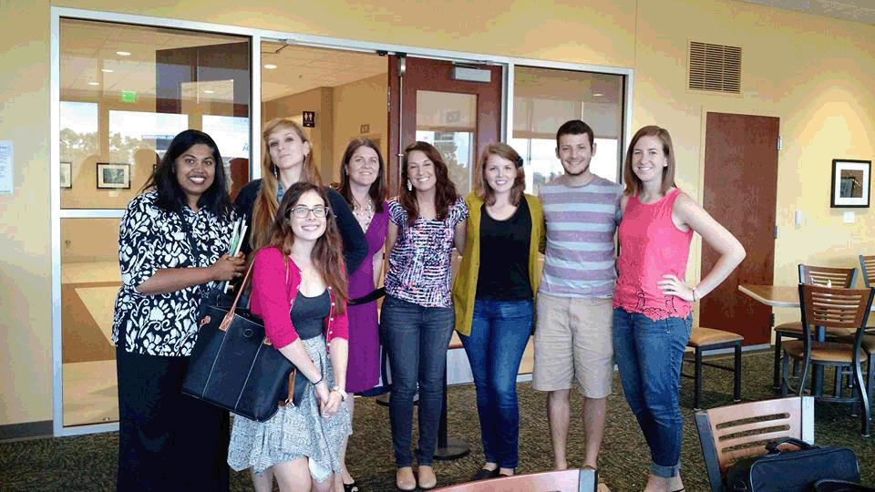
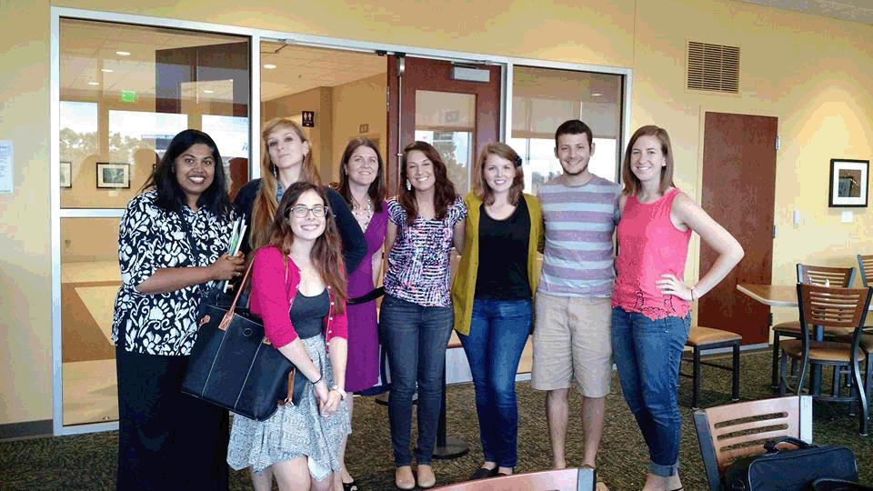

Computing and Engineering
About Us
Women in Computer Science and Engineering, or WiCSE, is a student organization devoted to the increased representation of women in computer science and computer engineering.
From the gallery
|  |  |
 |
Women in Computer Science and Engineering, or WiCSE, is a student organization devoted to the increased representation of women in computer science and computer engineering.
|  | |
|